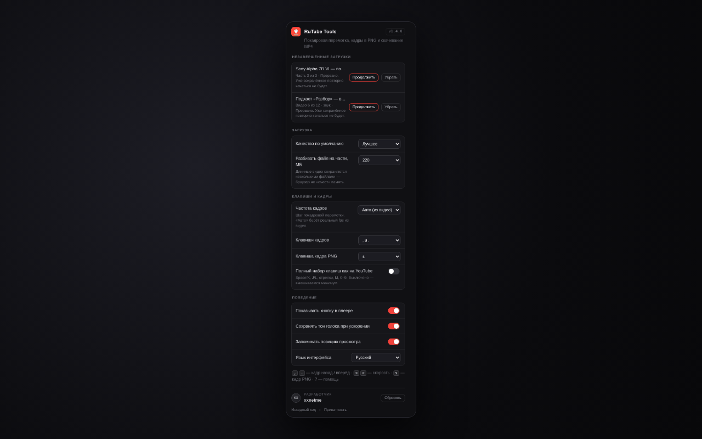

MP4 целиком и фрагментом
От 1080p до 144p. «С 12:30 по 12:45» — кнопка со временем берёт позицию прямо из плеера. Фрагменты качаются параллельно и склеиваются в обычный MP4 в браузере.
Скачивайте видео и плейлисты в MP4 или только звук в M4A, вырезайте фрагменты, листайте по кадрам, сохраняйте PNG и субтитры. Без рекламы, трекеров и сторонних программ.
Бесплатно, MITВсё локальноСборка 1.8.0
Четыре вкладки в аккуратной панели. Никаких настроек, чтобы начать.
От 1080p до 144p. «С 12:30 по 12:45» — кнопка со временем берёт позицию прямо из плеера. Фрагменты качаются параллельно и склеиваются в обычный MP4 в браузере.
Подкасты и лекции без лишнего трафика: берётся самый лёгкий поток, AAC достаётся без перекодирования, название попадает в тег файла.
Серии галочками: названия, длительность, «Все» и «Ни одной», счётчик выбора.
Продолжение с нужной части. В окне — история файлов с кнопкой «Показать файл».
Шаг на один кадр, номер кадра и таймкод, петля A/B, переход по номеру.
Нажмите S — кадр с таймкодом в имени. Или раскадровка серией до 120 кадров.
Галочка в «Скачать» — и .srt лежит рядом с видео с тем же именем: плеер подхватит сам. Обложка в JPG, мини-плеер, главы в .txt или .ffmeta, чтобы вшить их в MP4 без перекодирования.
RuTube отдаёт каждое качество с двух серверов — при обрыве расширение само переходит на рабочий. Повторы сегментов, диагностика ошибок одной кнопкой.
Подкаст, лекция или концерт: нужен звук, а не видео. Переключите формат — и расширение возьмёт самый лёгкий поток.
.m4a с названиями в тегах и общим альбомом.Точные цифры зависят от ролика: панель показывает оценку перед загрузкой.
Никакого сервера-посредника: расширение говорит только с RuTube и его CDN.
Берёт из API RuTube список качеств и сегментов: каждое качество — с двух зеркал.
Пять потоков, повторы и смена зеркала при сбое. Сегменты идут в сборку строго по порядку.
Видео — в MP4 через mux.js, звук — в M4A собственным модулем. Без перекодирования.
Firefox собирает файл в фоновой странице, Chromium — в offscreen-документе.
Тёмная, компактная, открывается кнопкой в углу плеера.




Клик по кадру открывает его во весь экран — там работают ←/→, колесо и Esc. Все кадры сняты на сборке 1.7.0 ; качества и размеры — из настоящего API RuTube; страница видео и плейлист — локальная имитация, чтобы снимки были одинаковыми.
Полный набор «как на YouTube» включается в настройках расширения.
25 к/с, как у обычного видео. В расширении шаг берётся из самого файла — 24, 25 или 29,97 к/с.
Выберите браузер — шаги ниже.
Откройте addons.mozilla.org/ru/firefox/addon/rutube-tools и нажмите «Добавить в Firefox». Обновления придут сами — это рекомендуемый способ.
rutube-tools-firefox.xpi — версия из репозитория, ставится временно.
Вставьте в адресную строку:
about:debugging#/runtime/this-firefoxВыберите скачанный .xpi — кнопка MP4 появится на странице видео.
Временное дополнение Firefox держит до перезапуска браузера. Для повседневного использования ставьте версию из магазина — она проверена Mozilla и обновляется сама.
Вставьте в адресную строку:
chrome://extensionsВключите его и нажмите «Загрузить распакованное», указав папку из архива.
Работают так же: edge://extensions или browser://extensions. Нужна версия на движке Chromium 109 и новее.
Это осознанные решения, а не недоработки.
Платные и защищённые видео не скачиваются. Расширение работает только с открытыми видео.
Прямые трансляции не поддерживаются: у них нет готового файла, который можно собрать.
Нет аналитики, аккаунтов и серверов. Настройки и список незавершённых загрузок лежат только в вашем браузере.
Откройте страницу видео, нажмите кнопку MP4 в правом нижнем углу, выберите качество и нажмите «Скачать MP4». Файл соберётся в браузере и появится в папке «Загрузки». Ничего дополнительно ставить не нужно.
Во вкладке «Скачать» переключите формат на «Только звук». Расширение возьмёт самый лёгкий поток (обычно 144p), вытащит из него AAC и сохранит .m4a без перекодирования. Так же работают фрагмент и плейлист — удобно для подкастов и лекций.
Да. Откройте окно расширения (иконка в панели браузера): в блоке «Незавершённые загрузки» нажмите «Продолжить». Уже сохранённые части видео или серии плейлиста заново не качаются. Продолжение идёт с границы части, не с середины; записи хранятся 14 дней.
В папке «Загрузки» — там же, куда браузер сохраняет всё остальное. В окне расширения есть блок «Сохранённые файлы»: последние 30 загрузок с именем, временем и кнопкой «Показать файл», которая открывает папку. В Firefox это работает всегда; в Chrome и Edge браузер может не разрешить открытие папки без флага запуска — тогда расширение честно пишет об этом, а файл всё равно лежит в «Загрузках».
Да. Во вкладке «Скачать» переключитесь на «Фрагмент» и укажите начало и конец, например 12:30 и 12:45. Кнопка с часами подставит время из плеера. Границы привязываются к фрагментам потока (2–4 секунды), поэтому файл может начинаться на пару секунд раньше.
Откройте страницу плейлиста (/plst/…) — кнопка станет PL. Отметьте галочками нужные серии: в списке видно название и длительность каждой, рядом счётчик «Выбрано 10 из 12», а кнопки «Все» и «Ни одной» снимают рутину с длинных сезонов. Затем «Скачать плейлист» — видео загружаются по очереди с паузой, очередь можно поставить на паузу или отменить.
Нажмите s — кадр текущего момента сохранится картинкой с таймкодом в имени файла. Для серии кадров откройте вкладку «Кадры» и задайте интервал раскадровки (до 120 кадров).
Вкладка «Ещё». Субтитры сохраняются в .srt, включая авто-субтитры RuTube. Главы можно скопировать текстом или сохранить в .txt и .ffmeta; второй формат вшивается в MP4 командой ffmpeg, она показана в панели. Там же обложка в JPG и ссылка .m3u8.
Так бывает с кодеками HEVC и AV1: собрать из них MP4 в браузере нельзя без перекодирования. Файл сохраняется как .ts и открывается в VLC. Видео в H.264 всегда собираются в обычный MP4. Режим «Только звук» от кодека видео не зависит.
Прямые трансляции и видео с DRM-защитой не поддерживаются — это осознанное ограничение. Расширение не обходит защиту.
Нет. Ни аналитики, ни рекламы, ни собственных серверов: запросы идут только к RuTube и его CDN, без cookie. Эта страница тоже не подключает внешние шрифты и скрипты. Подробности — в политике приватности.
Да. Для Chromium-браузеров есть отдельная сборка .zip: «Режим разработчика» → «Загрузить распакованное».
Бесплатно, с открытым кодом, без регистрации.